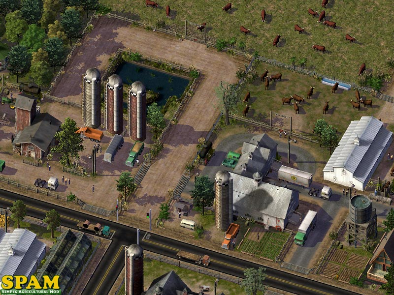
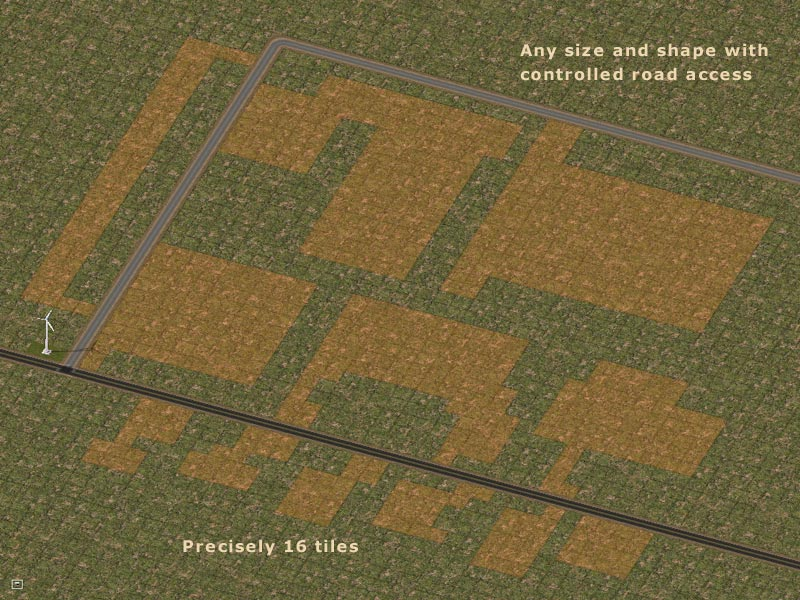
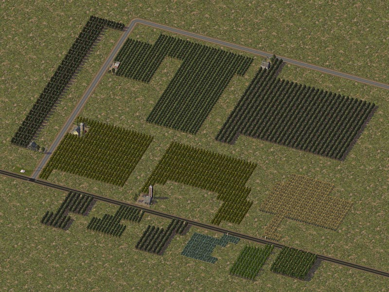

SimPeg Agricultural Mod
SOME BASIC FEATURES OF THIS MOD
An Overview
Let's have a good look at some of the new SPAM features.
Development Stages
A thing of the past. The default 3 stages have been removed. SPAM farms use a real-world agricultural Parcel Classification system - five classifications (AG-1 thru AG-5) corresponding to Private, Family/Partnership, Co-Op, Corporate and Processing. The Parcel Classification for each farm is now also shown in the custom query.

Agricultural (I-R) Demand
You like to eat, right? So does everyone else. In the real world, demand for food never sleeps. So why does it die off in the game? Well, now it doesn't. The entire demand and desirability aspects of the game's Industrial Resource (farms) has been modified to reflect real world values. Your cities will now retain a respectable desire for farm development... in all wealth and education levels... no matter where you zone for agriculture. Corn on the Beach? Industrial Wheaties? Landfill Lemons? Put your farm zones where YOU want them. Beach-front Barley may be a waste of high-priced land, but you're the Mayor, dammit. You want it... now you got it.
Employment
Did you know that each crop tile around a farm has workers on it? That's okay, neither did we. But they do... and we made a query just for the crops so you can see it for yourself. So that rinky-dinky little farm you had may have only shown a few workers when you queried it... but it didn't tell you about the other 30-50 guys out in the fields. They're all out there, trust me. So those farm job doubler mods you've been running were not really necessary. That said, SPAM farms are still a bit more labor-intensive than their default counterparts... and job counts on the lots are a bit higher to balance the amount of real estate farms use in comparison to other IND lots.
Education
No longer a deterrent. In fact, bring on the brainiacs. Agriculture is a science and SPAM farms now appeal to all education and wealth levels.
No Power? No Water?
No problem. The lower Parcel Class lots (AG1 to AG3) are zoned to develop without external water or power sources. Ideal for start-up cities... or creating remote, simple farming areas that won't pester you about basic civic services.
Pollution
No longer a farm killer. SPAM farms are much more tolerant of all pollution types except radiation. Did you know that the default farms were the largest water pollution producers in the game? But not SPAM farms. SPAM farms are Green... and even help to reduce air pollution.
Sub-Divide and Conquer
SPAM uses a new technology we call VSLTM... for Variable Shaped Lots. With VSL, you can now zone farm areas as small as a single tile... and in any shape that you want. That's right... any shape. Diagonal, L-shaped... even lots with holes in the middle to place your favorite pond. Farm lots will only develop on zones that are 17 or more tiles in size... but once they develop, by default, you can bulldoze any crop tiles, even all of them... and reshape and size the zone in any way that you want. You can also bulldoze a large area of existing crops... and watch as a new farm lot develops in its place.
 
Crop Only Lots
Using the VSL, you can now create zones that are precisely 16 tiles in size, any shape... and they will develop as crop-only lots. No buildings... just crops and a small irrigation prop by the road (so you know where to click for the query).
Improved Lot Orientation
Unfortunately, the game does not always orient Industrial lots correctly... often giving you driveways to nowhere and no visible means of accessing the lot from the road. SPAM lots are designed to account for this... with most lots that are large enough having road access points on all 4 sides. It doesn't always work, of course. But it's an improvement. With controlled use of the VSL and limiting the number of tiles that touch a road, you can improve on the orientation odds and even have some control over the size and class of lot that will develop.
Crop Selection
The default game gave you apples, oranges, lettuce, grass and dirt. Not much of a selection. Enough for maybe a fruit salad... and that's about it. The SPAM greatly increases that selection with a wider palette of default crops that can grow on all lots; not just custom crops on a few custom lots. Additionally, most SPAM crops are seasonal and will change with the seasons. You can now actually lean back... and watch the corn grow.
Dependencies
This mod requires the MTP Super Pack »
Installation
By default, the SPAM files should reside in a sub-folder named "SPAM" in your Documents Plugins folder.
- My Documents/SC4/Plugins/PEGPROD/SPAM/
- SPAM_Mod_Main
- SPAM_Core_Lots
- SPAM_Super_Resource_Pack
- SPAM_Resource
- SPAM_Textures
- SPAM_Crops_Resource
It has been tested and will function properly in that location... with no other farm or Industrial Resource related mods installed. Moving the folder, renaming the folder, or relocating any of the files in the folder may cause the SPAM to not function properly. Do so at your own risk.
Developer Notes
General Troubleshooting
As with all replacement mods, these only replace the growable default lots... and add some new ones. None of the custom lots you have installed will be changed and they will still develop. You may want to keep this in mind if any of those custom lots won't fit in visually with the MTP.
Compatibility
You do NOT have to remove any game-default farms already developed in your cities. They will continue to function normally with the SPAM installed. You will probably want to bulldoze those default lots to allow the new SPAM farms to develop, but that is up to you and can be done when and if you choose.
You should, however, remove any farm-related mods you have installed. Job doublers and Pedrina Plants killers, etc. are no longer needed and could interfere with the development of some SPAM lots.
Custom growable farm lots you have installed may or may not function properly with the SPAM. Any conventional custom lots will most probably still function... but any lot with modified development stages (e.g. CAM) will not function properly.
As to the interaction of the SPAM with other mods, some will need to be removed... but most should still function.
The Pedrina Plants Blocker you would want to remove.... unless you don't like the large grain elevators that will likely replace it. We believe the Pedrina Plant is the only default Stage 3 I-R lot... which explains why it develops so much. The SPAM will include several new Stage 3 lots for extra variety.
The SPAM farm lots have increased employment... so any related mods like I-R Job Multipliers probably won't be needed.... and would likely interfere with the SPAM lots that will replace the game default lots. But possibly not. It depends on how the mods were made.
Same for any of the IND Job Multipliers. The MTP IND mod lots will have slightly increased employment numbers. Combine that with the overall normally lower density of MTP cities, and the jobs multipliers should not be necessary.
With that said, if you are experiencing any conflicts with other files or SPAM items do not seem to be appearing or working correctly, try renaming the SPAM folder to "zzz_SPAM" while ensuring that it is located in your Documents Plugins folder.